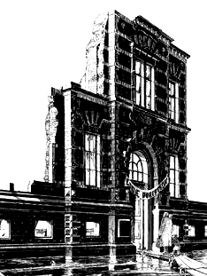
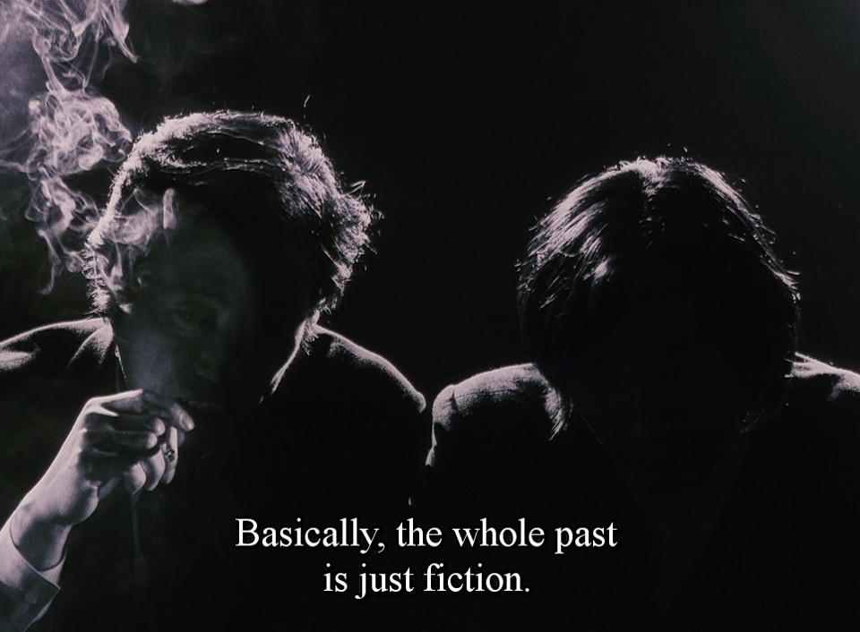

Forests are turned into paper and newspapers that call for the forests to be saved.
The whole place has been crafted, complete with faux-authentic food crates
and coffee bean sacks, to recreate this farm-to-market experience that stopped
existing a long time ago.
Symbols, signs, and simulations had become so all-encompassing, that it is
not longer possible to distinguish the real and the symbol. Melancholy is the
quality inherent in the mode of disappearance of meaning, in the mode of
volatilization of meaning in operational systems.
What we consider to be social reality is indefinitely reproducible and
extendable, with the copy indistinguishable from the original, or perhaps
seeming more real than the original.
The modern progress economy dealt in technological potential and progress, whereas the postmodern innovation economy dealt in windows of opportunity that open and close. No one cares about your product; we care about your adoption. No one cares about what your technology does; we care about what problems it solves for users, and how fast you can grow.
Production and the ideals of production have been so successful, that a new stage is reached, a stage that has a certain banality or triviality where the ideal disappears and becomes so commonplace that it does not have meaning associated with it.
The ability to kill thousands at the press of a button was no longer matched by the ability to take the measure of the calamity wrought. This promethean lag often anesthetized our faculties, including our ability to fear the plight that threatens us, for the simple reason that we cannot know what we cannot understand or represent concretely or morally to ourselves. These limitations in us induced a state of irresponsibility, a form of nihilism in action that maintained us as atomized individuals while we labored toward our own irrelevance and extinction.
It has never been spread out, yet, they said it would cover the whole country, and shut out the sunlight! So we now use the country itself, as its own map, and I assure you it does nearly as well.
Lewis Carroll(Sylvie)
The desert of cities is equal to the desert of sand — the jungle of signs is equal to that of the forests — the vertigo of simulacra is equal to that of nature — only the vertiginous seduction of a dying system remains, in which work buries work, in which value buries value. ~
When one weighed material comforts against something as ineffable, and unpriceable, as integrity, standing up for one's beliefs could seem like a utopian gesture — a moral luxury that was admirable, perhaps, but quite pointless.
Because to tell the truth, nothing happens anymore. Nothing any longer has the time to happen. There is no duration left for anything to unfold in. Nothing can anchor itself in the world long enough to make sense. While the present still has a duration, the hyperpresent no longer does.
After Death, Francois J Bonnet
The world is going digital, we're told, and someday there will even be digital real estate inhabited by people in digital clothes drinking digital orange juice extracted with digital juicers. People will play at the lives they once took seriously, lives that had once had heft and weight, and the juice content of juice will fall to zero. I suspect my old physical squeezer will still be working then, but the rest of my kitchen gear won't. Not much of it. I might not last, either. I fear I won't.
The psychic toll of goods that don't endure is that one loses faith the future will even come, and then one loses interest in it coming, for little that we own or use or cherish seems likely to be there with us to meet it. ~
Homely
The family, severed from the work world, was no longer a place where he could
prove and enact genuine competence and resourcefulness. The family more and
more became a mere setting for consumption, and since consumption makes no
demands of skill and discipline, there was less and less of substance to which
the parents needed or were even able to initiate their children.
To surrender one's children to an alien force of education and information is
a tendency that runs parallel with the diminishment of authority that parents
suffer. And both tendencies are reinforced by the technological desire to be
disburdened of an annoying task, which child rearing sometimes is, by a
dependable machinery that television provides with unequaled perfection;
neither naps, books, toys, nor babysitters can pacify a child as steadily and
reliably as television.
Reeducating the unwilling working class toward consumptive habits
There is a cartoon where a middle-aged woman stands in front of a chest of
frozen dinners in a supermarket, holding up two packages, looking a little
puzzled; and she says to her husband: "For the big day, Harv, which do you want?
The traditional American Christmas turkey dinner with mashed potatoes, giblet
gravy, oyster dressing, cranberry sauce and tiny green peas or the old English
Christmas goose dinner with chestnut stuffing, boiled potatoes, brussels sprout
and plum pudding?" Harvey looks skeptical and a bit morose. The world of
bountiful harvests, careful preparations, and festive meals has become a faint
and ironical echo.
Mabel is asking Harvey whether he would rather consume this aggregate of
commodities or that. To consume is to use up an isolated entity without
preparation, resonance, and consequence. To engage us, the vision of a cartoon
must remain within hailing distance of reality. If Mabel were young, slim, and
pretty, and her speech just a little more cheerful, no further changes would be
needed for a standard promotion of technological food.

Le facadisme est la pratique architecturale qui consiste à inclure une façade
plus ancienne dans une nouvelle construction.
A lifestyle lived according to seasons and the changing availability of
water and pasture, depicted in an idealized manner for urban audiences.
Even before the Alexandrian age, ancient Greeks had sentiments of an ideal
pastoral life that they had already lost. In the late 19th century, city
dwellers were worried that the unnatural pace of life brought on by railroads
and telegraphs had given rise to a new disease, neurasthenia.
Archaeologists have discovered Sumerian cuneiform tablets which complain that
family life isn't what it used to be.

There is no progress whatever. Everything is just the same as it was
thousands, and tens of thousands, of years ago. The outward form changes. The
essence does not change. Man remains just the same. Civilized and cultured
people live with exactly the same interests as the most ignorant savages.
Modern civilization is based on violence and slavery and fine words. But all
these fine words about progress and civilization are merely words.
And war, and pestilence, and tearful woes. O men, why vainly puffed up
do ye bring Yourselves to ruin?
The breakdown of the television set, the unavailability of a channel, or some
sort of experimental situation breaks the habit of viewing. In such a situation
almost all families experience a restoration of vigor and depth. They recall
with fondness and a wistful pride life without television. But when the
externally induced break comes to an end, a decision must be made from within
the normal framework of orientation. Some people give up television for good or
succeed in curtailing it in a principled way. Most people, however, return to
regular and extensive television watching.
Aristasia
Atomisation: The divide-and-rule tendency of the Pit, which seeks to isolate each individual by the clever use of the doctrine of "personal independence". By undermining and uprooting all natural loyalties, whether to family, religion, nation, custom or tradition, each individual is cut off from all sources of support and sustenance outside the cathode-defined "reality" of the Pit.
Bongo: A dweller in the Pit, one deeply affected by the ethos of the Pit. Bongos are Children of the Pit, shaped by the specific contents of the Pit, by its distortions and neuroses, by its attempts to escape its ownugliness through 'alternative' uglinesses, or its attempts to find rest inconformity to the 'standard' ugliness, or any of the thousand mix-and-match permutations of Pit-poisoning.
Deformism: The moral and aesthetic inversion of the Pit, the continual urge to pollute and parody anything real and to destroy any racinated image by adulterating it with deracinated elements.
Deracination: The process of cutting off an individual and a society from all natural roots. Creating a rootless, atomised type of humanity which, by its divorce from, and induced forgetfulness of, all normal standards and values, lacks dignity and self-respect. The "freedom" of the deracinated individual is limited to accepting the various "alternatives" permitted by the definers of reality.
Ordinator: The Aristasian word for "computer".
Racination: The reverse of deracination. It is the process (or rather processes) by which we can undo the damage which the Pit has done to us, regain our stolen innocence and revive our trampled joy and wonder.
Vintesse: Province of Aristasia corresponding to the 1920s.
The Eclipse: The cultural and spiritual collapse of the early 1960s. Civilisation proper ended at this time and the Void (or the Pit) took its place.
The Pit: The deracinated contents of the post-Eclipse world, the psychotic pseudo-reality created by the Eclipse, or the world of the late 20th century.
The Void: Refers to the post-Eclipse world's utter emptiness of anything of value or interest, just as the sea is void of fresh water or the desert void of everything but sand. The Void is the Pit as seen from within Aristasia, simply a yawning nothingness, defined not by what it is, but by what it is not.
Modernity attempts to degrade our ability to pay attention. It seeks to have
us believe that we can have everything at a moment's notice, without thought
for payment, patience or production. If one does not pay for something they
will not value it. If one does not work at something they will not empathize
with it. And if one does not produce something they will not understand it.
Modernity removes each and every single one of these factors by way of credit,
addictive mechanisms and consumerism. ~
The concept of liminality for thinking about modern societies is connected to the study of theatre and performance. The liminal
experiences of tribal cultures – in which ritual is a collective process for
navigating moments of change – are different from the liminoid
experiences available in modern societies, which resemble the liminal, but are
choices we opt into as individuals, like a night out at the theatre. ~
When finished objects become commodities and break, they are easily replaced.
When you break a chair, you buy another chair. We know well how to make one
thousand chairs. But when a unique object breaks, we might mend. To learn the skill of mending is to
also gain the skill of building, to understand the very urge to build. If we
never mend, we not only risk building less but building in perverse ways.
To mend is to comprehend a human scale problem, and without this
understanding our creations become strange creatures. The more finished goods
become commodities, the fewer opportunities an individual has to generate new
creation. The ability to mass-produce removes the opportunity for the great
many to learn to produce at all.
This curious world we inhabit is more wonderful than convenient, more
beautiful than it is useful, it is more to be admired and enjoyed than
used.
Henry David Thoreau
In the 1976 film Network, a newsreader about to lose his job threatens to
kill himself on live TV. Ratings skyrocket, he gets his own talk show as a
pundit, and his catchphrase “I'm mad as hell and I'm not gonna take this
anymore!” goes viral.
Premium mediocre
Premium mediocre is food that Instagrams better than it tastes.
Mediocre with just an irrelevant touch of premium, not enough to ruin the
delicious essential mediocrity.
Venkatesh Rao
Sous-produit de la circulation des marchandises, la circulation humaine
considérée comme une consommation, le tourisme, se ramène fondamentalement
au loisir d'aller voir ce qui est devenu banal. Cette société qui supprime la
distance géographique recueille intérieurement la distance.
People who have traveled through Glacier Park in an airconditioned motor
home, listening to soft background music and having a cup of coffee, would
probably answer affirmatively and without qualification when asked if they knew
the park, had been in the park, or had been through the park.
Such people have
not felt the wind of the mountains, have not smelled the pines, have not heard
the red-tailed hawk, have not sensed the slopes in their legs and lungs, have
not experienced the cycle of day and night in the wilderness. The experience
has not been richer than one gained from a well-made film viewed in suburban
Chicago.
Albert Borgmann, Technology and the Character of Contemporary Life
One Human Minute
The Guinness Book was a best seller because it presented nothing but
exceptional things, with a guarantee of authenticity. This panopticon of
records had, however, a serious drawback: it was soon obsolete. No sooner had
some fellow eaten forty pounds of peaches complete with pits than another not
only ate more, but died immediately after from a volvulus, which gave the new
record a dismal piquancy.
While it is untrue that there is no such thing as mental illness, that it was
invented by psychiatrists to torment their patients and squeeze money out of
them, it is true that normal people do far madder things than the insane. The
difference is that the madman does what he does disinterestedly, whereas the
normal person does it for fame, because fame can be converted into cash. Of
course, some are satisfied with fame alone, so the matter is unclear. In any
case, the still-surviving subspecies of intellectuals scorned this whole
collection of records, and in polite society it was no distinction to remember
how many miles someone on all fours could push a nutmeg with his nose painted
lavender.
Cultural works, unlike software, are a consumer good, not a tool for use in
production, or a producer's good. Producer's goods are the assets used in
production, such as the tools and equipment required to produce consumer goods
sold for profit. Capital demand is distinct from consumer demand. Capital
demand is the demand for producer's goods; consumer demand is the demand for
consumer goods.
The Pursuit of Excellence
Activities such as reading the newspaper or engaging in conversations can
advance one's world citizenship, but they may also be done merely for
diversion. Some of the categories, however, are more central to the traditional
kinds of excellence and may provide benchmarks.
World citizenship surely benefits from attending programs in political or
union training to which on the average less than a minute per day is devoted.
Less than half a minute is spent on attending special lectures, less than a
minute on scientific reading, and about five minutes on reading books.
Gallantry is served through active sports, which take up six minutes, and
through outdoor activities, such as hiking, on which two minutes are spent.
Musicianship is most directly making music to which one minute is given.
Artwork takes less than half a minute, as do visits to museums. Half a minute
is devoted to theater performances and concerts. Records are played for one
minute. An indication of charity is volunteer work on which between one and two
minutes are spent.
However much we as a society may admire excellence, we are certainly not
devoted to its pursuit. All the activities which have been taken as suggesting
a dedication to excellence constitute when taken together less than a quarter
of the time spent on watching television.
Capitalism doesn't require that a profit be made on the production of capital goods because profits are made through the control of the circulation of consumer goods. Anything that decreases the cost of capital consequently increases the potential profit that can be captured through the sale of the goods.
Failure to understand the difference between capital demand and consumer demand propagates the myth that the success of free software can be a template for free culture. Under capitalism, only capital can be free. That's why software can be free, but culture cannot be free without more fundamental shifts in society.
In the end, the market proved both views right braindance became an everyday product, another form of entertainment, but also a new form of surveillance.


![Doubt is our product since it is the best means of competing with the "body of fact" that exists in the mind of the general public. It is also the means of establishing a controversy. Within the business we recognize that a controversy exists. However, with the general public the consensus is that cigarettes are in some way harmful to the health. If we are successful in establishing a controversy at the public level, then there is an opportunity to put across the real facts about smoking and health.](../media/refs/smoking.png)